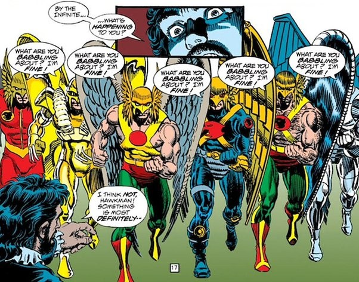
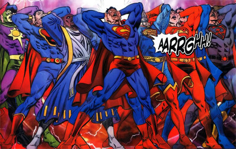

P2
Powerhound_2000
2022-07-05 14:09 UTC
#1
Fantastic intro. Love it. Need more of it.
Can’t say I’ve ever tried to break down a shoebox. They’re too useful for putting stuff in.
Aha! I wondered why La Capitan looked different from everyone else on the cover.
Marionettiverse sounds like a great place for a creepy villain to originate from.
So, Sliver of Reality on the ship that gets driven into Oblivaeon means La Comodora can come back sometime yes please?
“Vault of the Void”? And he just came up with that in the moment. My god.
So has ninja fiction been a thing since ninjas stopped being a thing?
Such tantalizing bleeps!
We can hope. I feel like there’s enough stuff with her and with Timeslinger’s limited power source in the RPG, that a return is inevitable, but will likely take a while.
Have to say, I love episodes like this, especially that bit towards the end when they came up with the through line between the Sliver and La Capitan becomes La Comodora. It’s like the “Con wasn’t compromised” lightbulb moment in that ep.
Aggressively Canadian pirates is something I never knew I wanted - and what a fun coincidence this episode was recorded on Canada Day, no less!
Christopher might like his CLIKY keyboard but i am too used to my QWERTY keyboard.
For completeness it should be mentioned that Robert Newton also played Black Beard. had a return to treasure island movie and a 26-episode Long John Silver tv series.


Woot, my Chrono-Ranger question made it!
Anyway, this was a cool episode, and I enjoyed the twists and turns. I find myself wondering if the Sliver of Creation was ever revised to be a shard of a Singular Entity - either Archaeon, or something progenitor of the other Singulars.
I agree. My question was submitted last night. 
“I know cowboys are still a thing”… As if pirates aren’t still a thing.
Also can’t believe I mixed up dawn and dusk… But who knows, maybe the sun does set at dawn in the vampverse? Despite that going against the exact definition of dawn…
Every Writer’s Room I’ve listened to lately has gotten me more and more excited for the Disparation expansion. La Capitan split between a bunch of different art styles would make so much more sense for her flipside! And that could be a really interesting Critical Event… maybe including swapping through Hero Character cards?
Like a forced version of Haunted Fanatic’s incap, or the old Completionist Guise. That could be really cool.
I’m just wondering if we’re going to see both La Capitan and La Comodora in the same expansion. Because this whole thing being a discussion of the transition between the two phases of her life does seem like an interesting point. Though they did say she goes through some stuff before returning, so might be the next one?
I’ve mentioned before that I have problems with how vague C&A are about the powers of La Capitan…saying that she “temporally anchors” herself with stolen treasures, without explaining exactly what that means, and that kind of thing. Well, now I am Hoist Anchor by my own petard, because after belatedly hearing this episode, I mandatorily will have to ACTUALLY write this entire episode, if not the entire arc. I don’t feel up to the workload involved, but it’s obvious that I need to do it, because writing a PROPER time travel story is something that most people just don’t have the talent necessary to accomplish, and since the only other person I know of who has that skillset is even busier than me, there’s really no choice, I have been Forced Volunteered to perform this great service for my community.
I’m more interested in having ArchAeon resurrected from the corpse of OblivAeon, and initially seeming benevolent, but eventually becoming so much of a problem that the heroes need to bring Oblivion back to defend against it. (Reminder that my headcanon is that Oblivion looks female, while Archaeon resembles the Aeon Men without any of the aspects that resemble the Oblivion aspects of OblivAeon.)
The Cosmic Freedom Five were a throwaway mention here, but I have immediately started thinking about it. Instead of Legacy as America guy, it’s essentially United Federation of Planets guy. Absolute Zero has a ship instead of a suit, Bunker has an entire squadron of ships that he pilots all of remotely, Tachyon is literally FTL, and the Wraith is functionally using the Webway from 40K. Megalopolis becomes a Coruscant-esque city planet that’s the Federation’s unofficial capital (New York City instead of Washington DC), Rook City is a mix of holy Terra and the planet that the Night Haunter came from, Unity is an artificial intelligence…it writes itself
Lol, Unity’s daughter has two daddies!
It’s just over 300 years since pirates, but only seventy five years of them having the Arr Matey accent. I really like the brief impression of Swedish/Minnesotan pirates, it’s so hilariously not the Vikings while being obviously just the Vikings.
It would be a very different Citizen Dawn if shep granted sanctuary to any nonpowered humans in Vampire World. Would a Klansman let a bunch of black dudes into his house if it was the only way to keep them from being murdered by Neanderthals? He probably hates the Neanderthals even more, even if they resemble him. Fun thought experiment.